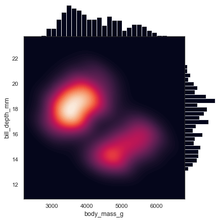

Smooth kernel density with marginal histograms#
seaborn components used: set_theme(), load_dataset(), JointGrid
import seaborn as sns
sns.set_theme(style="white")
df = sns.load_dataset("penguins")
g = sns.JointGrid(data=df, x="body_mass_g", y="bill_depth_mm", space=0)
g.plot_joint(sns.kdeplot,
fill=True, clip=((2200, 6800), (10, 25)),
thresh=0, levels=100, cmap="rocket")
g.plot_marginals(sns.histplot, color="#03051A", alpha=1, bins=25)